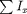
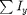

FileName : generate_free_evolH
Contents
Description
This program calculates the Radiofrequency hamiltonian. Hrf, is a 1xN cell where N is twice the number of channel or the number of hetronuclear nuclei.
Each cell consists of a matrix as described below :
- First N/2 matrices are  where sum is over each nuclear species present
- Last N/2 matrices are  where sum is over each nuclear species present
function [H_rf] = generate_rfH(spinlist) global gra Ix=gra.Ix; Iy=gra.Iy; Iz=gra.Iz; if(length(spinlist)<2) n(1)=0; else n(1)=0; n(2:length(spinlist))=spinlist(1:length(spinlist)-1); end for k=1:length(spinlist) H_rf{1,k}=zeros(2^sum(spinlist)); H_rf{1,k+length(spinlist)}=zeros(2^sum(spinlist)); for j=n(k)+1:n(k)+spinlist(k) H_rf{1,k} = H_rf{1,k}+Ix(:,:,j); H_rf{1,k+length(spinlist)} = H_rf{1,k+length(spinlist)}+Iy(:,:,j); end end